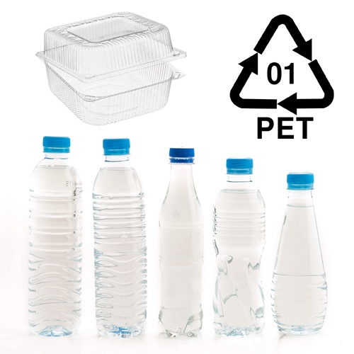
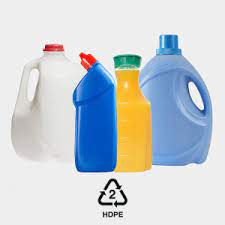
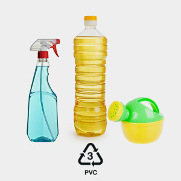
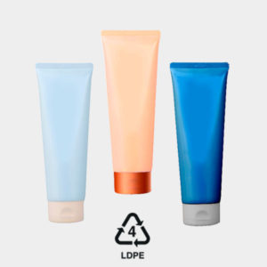
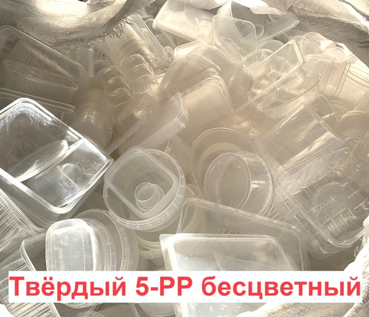

- Полиэтилентерефталат
- Проще всего сдать на переработку бутылки из-под напитков. Накопители для них
есть на многих контейнерных площадках, особенно в крупных городах.
Если в вашем населенном пункте таких контейнеров нет, можно попробовать
связаться с местными экосообществами и попросить у них информацию.
Примеры изделий из ПЭТ:
- бутылки из-под напитков (воды, молока, газировки) и растительного масла;
- прозрачные одноразовые контейнеры из-под фруктов, ягод и печенья;
- емкости от косметических и бытовых средств;
- коробки от игрушек и зубных щеток.
- Полиэтилен низкого давления
- Твёрдые флаконы и бутылки сдать на переработку относительно несложно, часто их принимают в придомовые контейнеры.
Иногда маркировку «2» можно найти на мягком пластике — пакетах, плёнке и т.п.
Примеры изделий из ПНД:
- флаконы от бытовой химии, шампуней, гелей для душа;
- канистры, бидоны;
- крышки от бутылок для напитков и упаковок тетрапак.
- Поливинилхлорид
- ПВХ принимают на переработку очень редко. По возможности выбирайте другой материал.
Примеры изделий из ПВХ:
- игрушки;
- одноразовые контейнеры;
- подложки для тортов и конфет.
- Полиэтилен высокого давления
- Этот материал, как правило, используют для производства мягкого пластика, жёсткие изделия встречаются реже.
Примеры изделий из ПВД:
- плотные пакеты;
- пупырчатый полиэтилен;
- мусорные мешки.
- Полипропилен
- На переработку принимают в основном твердый полипропилен, мягкий — реже.
Примеры изделий из ПВД:
- трубочки для напитков;
- крышки от кремов и бытовой химии;
- пакеты из-под круп, сахара, хлеба.